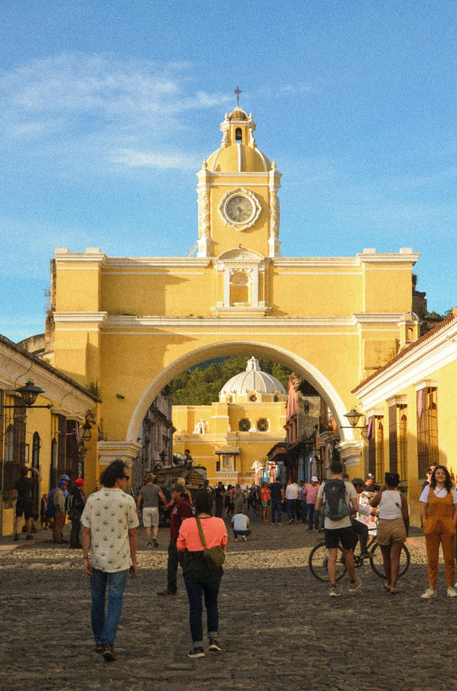
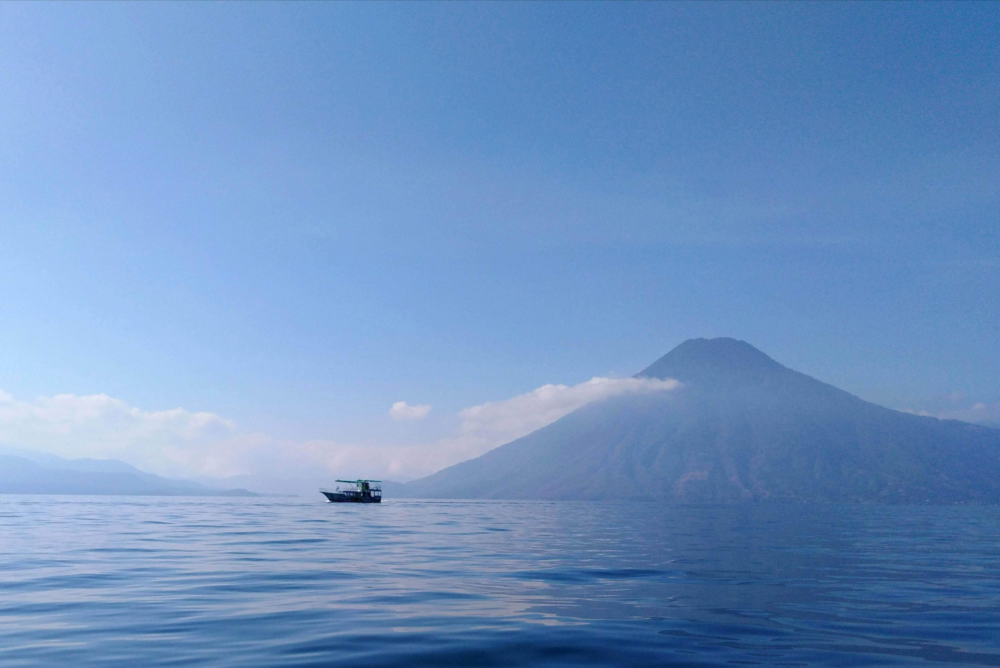

Antigua Guatemala
Antigua Guatemala commonly known as Antigua or La Antigua, is a city in the central highlands of Guatemala. The city was the capital of the Captaincy General of Guatemala from 1543 through 1773, with much of its Baroque-influenced architecture and layout dating from that period.
 |
67°F |
 |
41% |
 |
9 mph |

Atitlan Lake
Lake Atitlán (Spanish: Lago de Atitlán,) is a lake in the Guatemalan Highlands of the Sierra Madre mountain range. The lake is located in the Sololá Department of southwestern Guatemala. It is known as the deepest lake in Central America
|
66°F |
|
90% |
|
4 mph |

Tikal
Tikal (Tik'al in modern Mayan orthography) is the ruin of an ancient city, which was likely to have been called Yax Mutal, found in a rainforest in Guatemala. It is one of the largest archeological sites and urban centers of the pre-Columbian Maya civilization.
|
86°F |
|
70% |
|
8 mph |